Preparando el entorno de desarrollo
- Git, GitHub, R, RStudio y RMardown
- Requisitos
- Creando una cuenta en GitHub
- Creando un repositorio
- Clonando el repositorio
- Creando el primer documento RMarkdown
- Consolidar y empujar los cambios a GitHub
- Guardar en caché nuestras credenciales de GitHub
- Creando ramas localmente
- Haciendo cambios locales con Git
- Consolidar cambios locales con Git
- Abrir una petición pull en GitHub
- Converge la pull request en GitHub
- Creando la página del sitio
- Actualiza el repositorio local
- Agregando funcionalidad a nuestra página
- Tidyverse
- Conjuntos de datos de ejemplo o datasets
Git, GitHub, R, RStudio y RMardown
El uso del control de versiones es obligatorio cuando se trabaja de manera colectiva y se quiere controlar el flujo de trabajo y el seguimiento de los cambios en el mismo. Incluso, para trabajar de manera individual, es deseable mantener vigilados los cambios realizados a un documento importante. RStudio trabaja bastante bien con Git (recordando que utilizaremos Github para hospedar nuestros archivos). Así que comencemos.
Requisitos
A continuación explicamos qué se debe instalar, siendo primero ciertas aplicaciones:
Software
Debemos descargar Git desde Descargas. Lo instalamos. Enseguida descargamos R desde el repositorio CRAN que corresponde a nuestro país (México). En esta página se encuentran versiones para los tres sistemas operativos más utilizados. En el caso de Windows, existen pasos adicionales para su descarga:
Seleccionamos el enlace Download R for Windows: 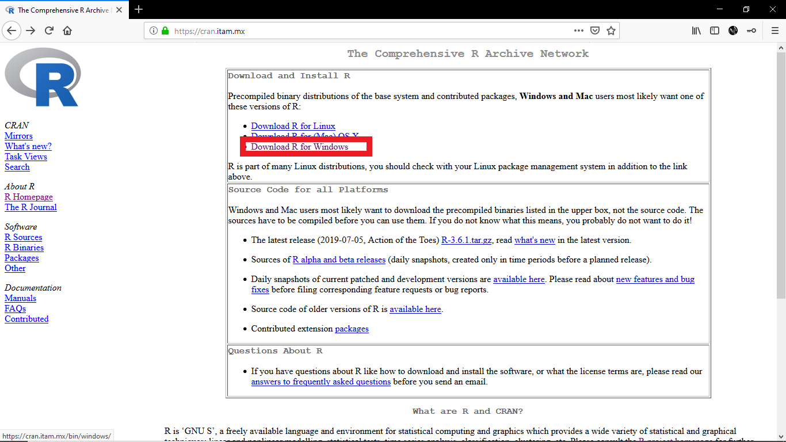
Enseguida damos clic en el enlace Install R for the first time: 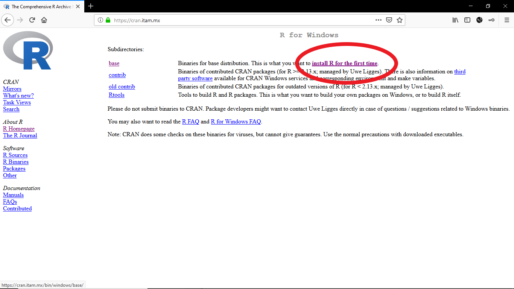
Y terminamos con la descarga del instalador: 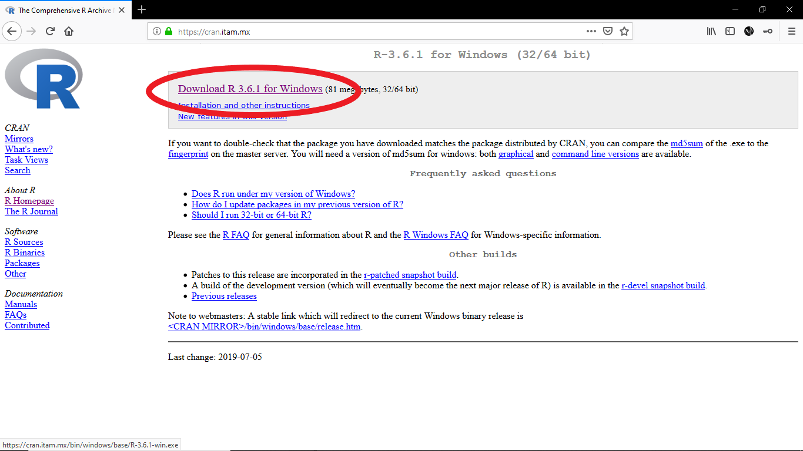
La instalación es normal, incluso sin modificar ninguna opción por defecto.
Ahora bajamos e instalamos RStudio desde Descargas, cuidando que sea obviamente la versión deseada:
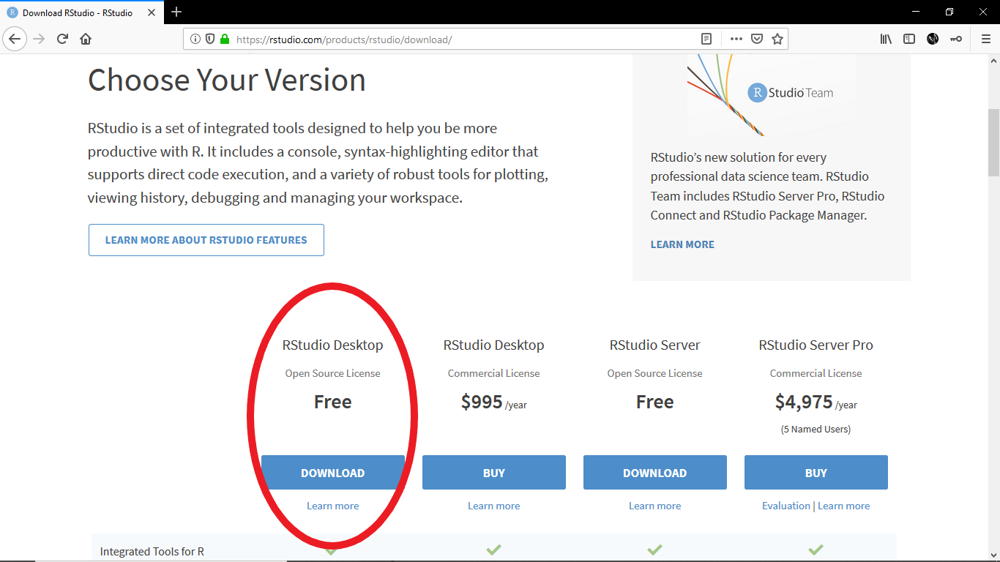
Para el sistema operativo adecuado:
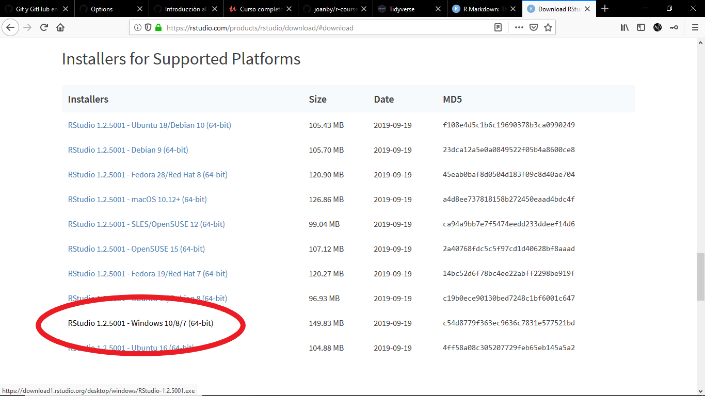
Lo ejecutamos enseguida. Queda instalar algunas librerías necesarias para la creación de nuestros documentos.
Librerías necesarias
Aunque los programas instalados ya pueden ser utilizados, falta instalar algunos paquetes que añaden funcionalidad y lo necesario para poder elaborar nuestros documento y páginas web. Procedamos a agregarlas a RStudio.
RMarkdown
En primera instancia, debemos instalar RMarkdown. Esto se realiza yendo al menú Tools y dar clic sobre la opción Install packages:
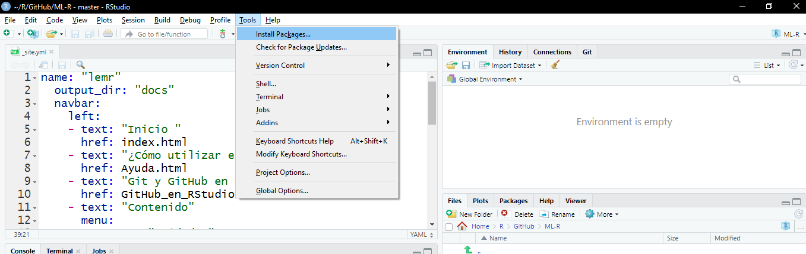
Aparecerá una ventana, en la cual escribiremos el nombre del paquete a instalar: rmarkdown. Notemos que mientras vamos escribiendo el nombre, RStudio nos sugiere posibles paquetes, podemos seleccionar el deseado desde que lo muestra.
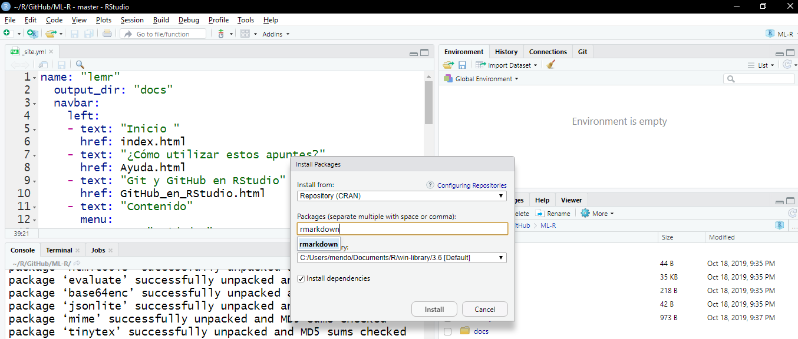
Ya seleccionado damos clic en Install, asegurándonos de que la casilla Install dependencies esté seleccionada:
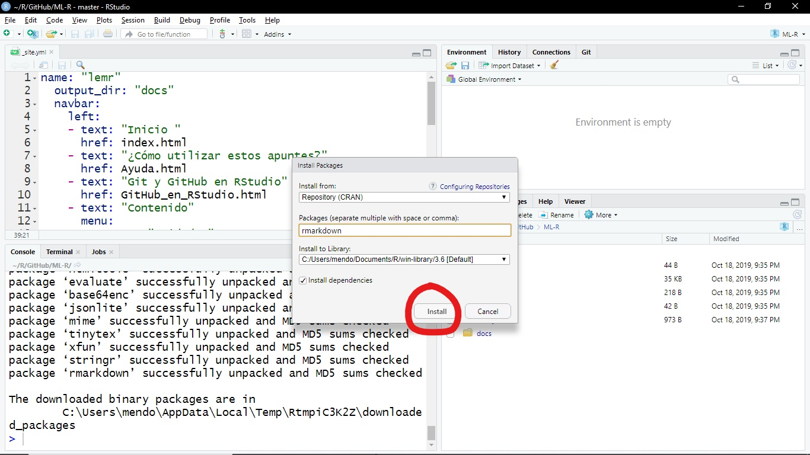
Esperamos a que descargue los archivos necesarios y los instale. Veremos algunas barras de descarga. Sabremos que ya ha terminado cuando aparezca el siguiente mensaje en la ventana Console:
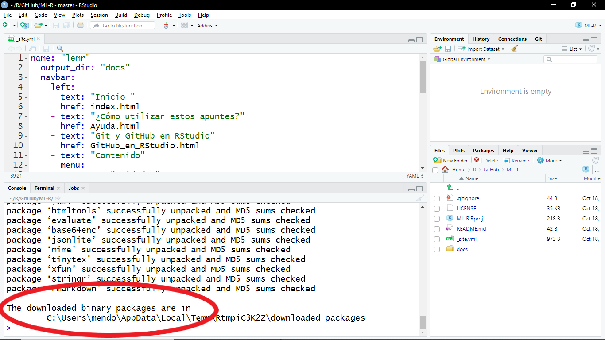
Tinytex
Quizá necesitemos generar algunos documentos PDF en el camino. Para ello, hay que instalar alguna distribución Latex. Sin embargo, pueden resultar bastante pesadas, llegando incluso a requerir descargas de hasta 1GB. Debido a este inconveniente, existe una distribución ligera que contiene solo lo necesario para la generación de documentos técnicos: Tinytex. La instalaremos en RStudio de la siguiente manera:
En el panel de la consola (Console) comenzaremos a escribir tinytex. Si mientras lo escribimos aparece un recuadro flotante con la palabra tinitex::, tal como se muestra en la siguiente imagen, significa que está instalado. 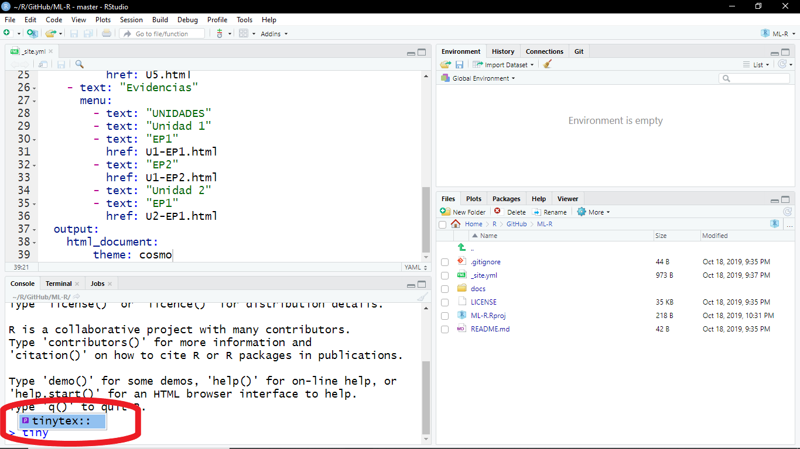
En caso contrario, toca instalarlo mediante un proceso exactamente igual al que usamos cuando instalamos RMarkdown. Terminando, volvemos a probar si aparece el recuadro. Al hacerlo, damos Enter y aparecerá un menú contextual con varias opciones. Seleccionamos install_tinytex:
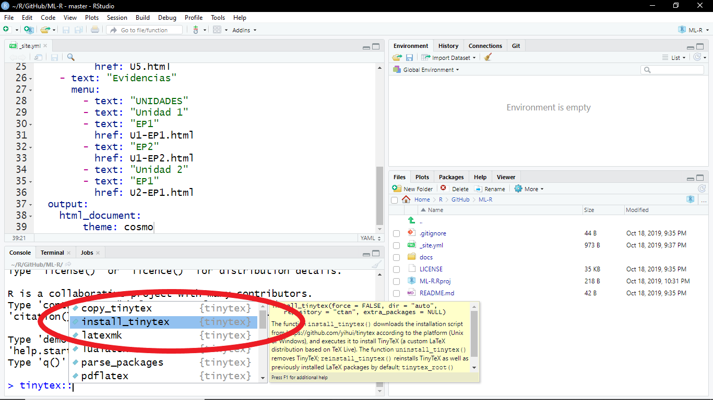
Al haberlo hecho, debe quedar lo siguiente en consola:
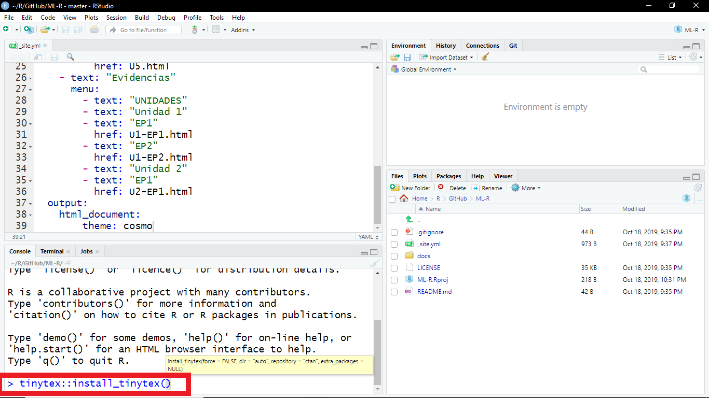
Damos Enter y el programa comenzará a instalar la distribución. Tardará un rato, ya que deberá descargar, compilar e instalar. Sin embargo, lanzará un aviso como el que se muestra:
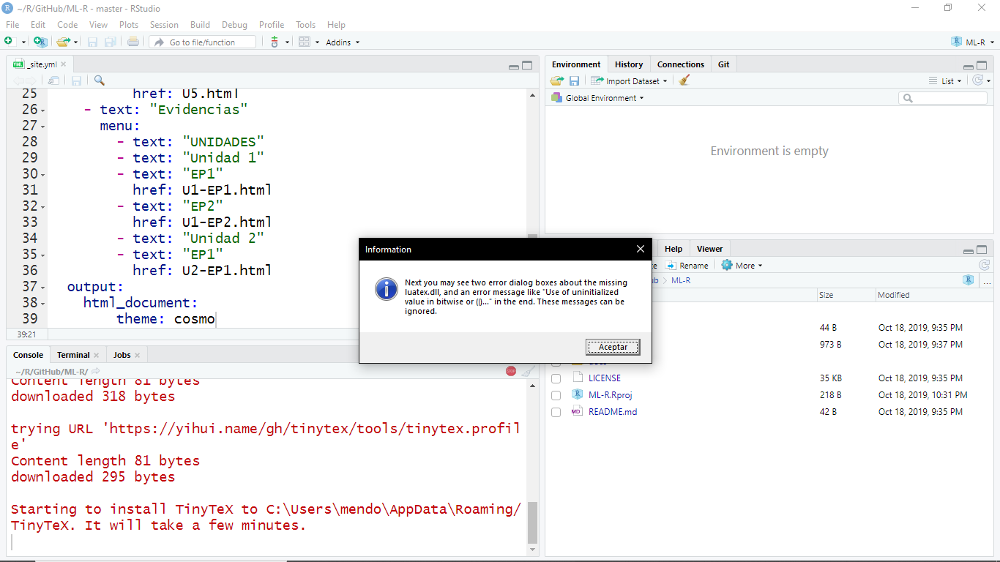
Básicamente, avisa que podrían aparecer dos ventanas de error y que no pasa nada, que felizmente las ignoremos dando clic en Aceptar. Después de un rato, hayan o no salido los mensajes de error, el programa habrá terminado con la siguiente frase, pidiendo que cerremos RStudio y volvamos a abrirlo:
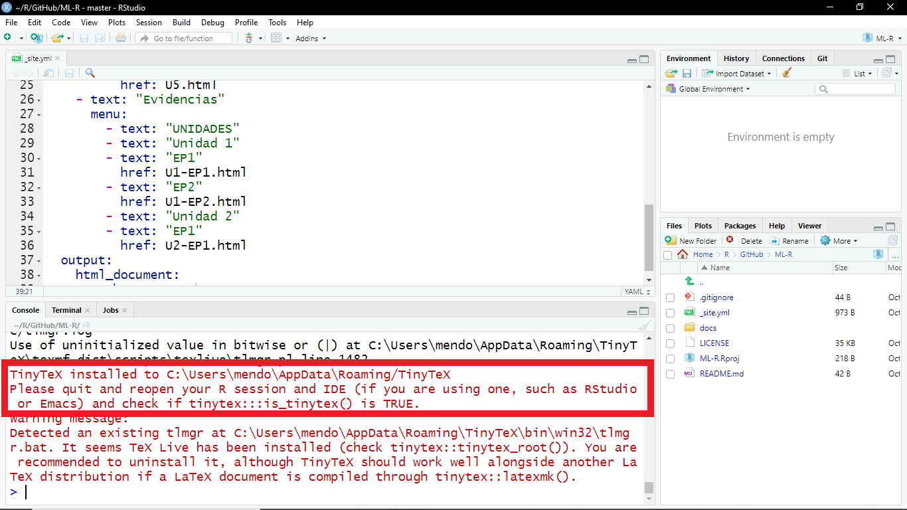
Nuestro entorno de trabajo está listo para generar documentos estadísticos por medio de RStudio.
Creando una cuenta en GitHub
Ahora nos dirigimos a GitHub y nos creamos una cuenta dando clic en el botón Sign up que se encuentra al lado superior derecho: 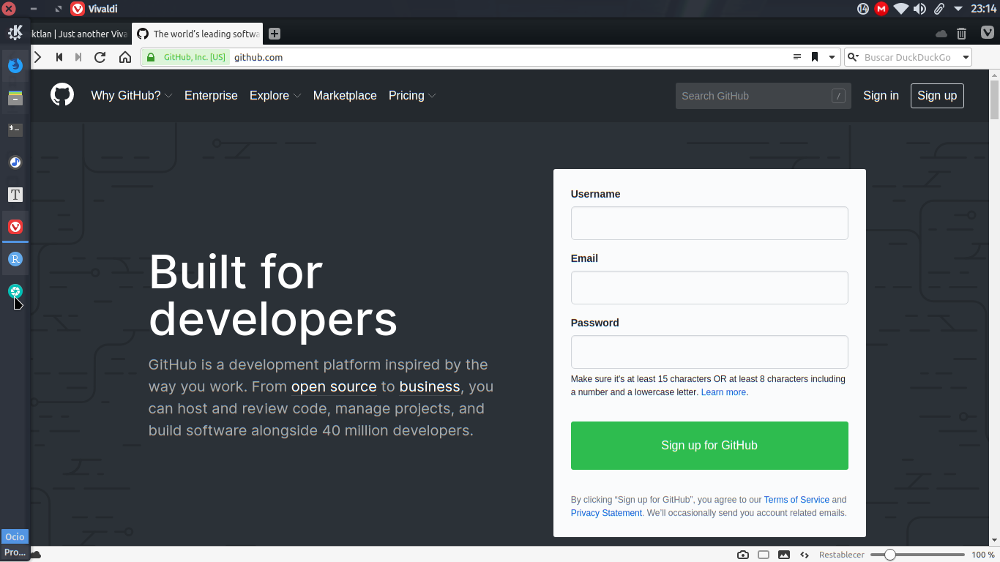
Nos pedirán un nombre de usuario, una dirección de correo y la contraseña. Abajo de todo, existe un paso de verificación de cuenta, solo hay que aprobarlo:

GitHub
Ahora toca decirle a Git quiénes somos en GitHub. En RStudio nos vamos a Tools -> Shell y escribimos en la nueva ventana que saldrá, lo siguiente:
git config --global user.email "nombre_correo@company.com"
git config --global user.name "TuNombreEnGithub"Listo.
Creando un repositorio
En la página de GitHub.com, ya autentificados, nos dirigimos al signo ‘+’ que se encuentra al lado superior derecho de la pantalla. Damos clic allí y luego en New Repository. 
Le ponemos el nombre que deseemos, le damos una descripción adecuada, lo dejamos público, damos check a Initialize this repository with a README. Damos clic en el botón Add .gitignore y escribimos R. Damos clic en el siguiente botón Add license y seleccionamos GNU General Public License v3.0 y presionamos Create repository.
GitHub
Clonando el repositorio
En nuestra página GitHub, damos clic a nuestro repositorio a clonar.

En la pestaña Code localizamos el botón verde Clone or download.

GitHub
- Damos clic en el botón Copy to clipboard para copiar la dirección del repositorio.

GitHub
- Ejecutamos RStudio y damos clic en File -> New Project -> Version Control -> Git. Pegamos la dirección copiada en Repository URL, presionamos
tabpara asegurarnos de que se ponga el nombre original del repositorio y presionamos Create project.
GitHub
Creando el primer documento RMarkdown
- Con el proyecto creado y sin haber salido de RStudio, damos clic en File -> New File -> RMarkdown.
- Elegimos HTML como salida por defecto.
- Guardamos el archivo en File -> Save.
- Ponemos un nombre adecuado (por ejemplo, test) y guardamos.
Consolidar y empujar los cambios a GitHub
- Con nuestro archivo guardado, es momento de «consolidar». Para ello, nos dirigimos a la pestaña Git que se encuentra en el panel superior derecho:
commit
Presionamos Commit.
En la ventana Review Changes seleccionamos todos los archivos mostrados.Todos deberán cambiar su status a una letra A de color verde. Agregamos un mensaje al commit y presionamos el botón Commit: 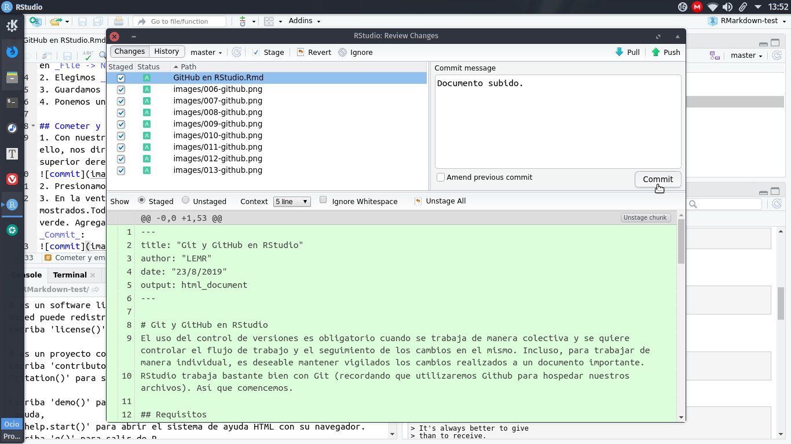
Después de un pequeño lapso, se mostrará una ventana con algunos mensajes. La cerramos con el botón Close.
Presionamos Pull en la ventana Review Changes que queda, esto es para «jalar» los cambios hechos en el repositorio de manera remota. Esperamos a que aparezca otra ventana y el mensaje «Ya está actualizado» y la cerramos con Close.
Ahora presionamos Push para «empujar» nuestros cambios hechos recientemente al repositorio. Aquí Git nos pedirá el nombre de usuario y la contraseña de la cuenta. Podremos cerrar la ventana cuando aparezca el botón Close.
Ahora hay que dirigirnos a nuestro repositorio GitHub para verificar los cambios realizados.
Guardar en caché nuestras credenciales de GitHub
Cada vez que empujemos nuestros cambios a GitHub, éste nos pedirá nuestro nombre de usuario y contraseña. Si no queremos escribirlas cada vez, podemos almacenarlas de manera temporal en la caché.
$ git config --global credential.helper wincred- Para Linux, en la terminal se ejecuta lo siguiente:
$ git config --global credential.helper cacheCreando ramas localmente
Un concepto intrínseco en GitHub es el uso de ramas, las cuales permiten desarrollar el proyecto principal en instancias separadas. Así, los cambios realizados no se reflejan en él de inmediato, si no que se someten a revisión cuando una de las ramas se considera terminada. Cuando los cambios hechos en una rama se consideran lo adecuados para implementarse en el proyecto principal, se realiza una petición pull. Al aprobarse, converge en la rama principal, que se llama Master.
Para crearlas a través de RStudio:
- Nos dirigimos al panel inferior izquierdo, damos clic a la pestaña Terminal y escribimos:
git branch NombreDeRama- Verificamos el estado del repositorio:
git statuscommit
Es importante notar que solo creamos la rama, no estamos dentro de ella (aún seguimos en la rama Master). 3. Para dirigirnos a la rama recién creada, escribimos:
git checkout NombreDeRama- Volvemos a verificar el estado del repositorio, para que nos indique si ya estamos en la rama nueva:
git statusHaciendo cambios locales con Git
Generemos la salida HTML de nuestro documento RMarkdown en un directorio separado llamado docs. Para lograrlo:
Creamos un nuevo directorio llamado docs en el panel inferior derecho de RStudio.
Abrimos y agregamos al inicio del documento, justo después del campo tittle
knit: (function(input_file, encoding) {
out_dir <- 'docs';
rmarkdown::render(input_file,
encoding=encoding,
output_file=file.path(dirname(input_file), out_dir, 'index.html'))})Guardamos el archivo.
Damos clic en el botón Knit que se encuentra en el panel donde estamos editando nuestro documento. Se generará el archivo HTML. Podremos ahora visualizarlo en su forma final.
Consolidar cambios locales con Git
Con el archivo HTML generado, es momento de consolidar los cambios.
- Determinar el estado del archivo:
git statusEl archivo deberá encontrarse dentro de los archivos sin seguimiento.
- Para agregar el archivo al seguimiento, escribe:
git add . - Verifica el estado. El archivo ahora debe estar dentro de los cambios a ser confirmados:
git status- Consolida el archivo. No olvides incluir un comentario de consolidación adecuado:
git commit -m "Salida HTML a un directorio de documentos"- Para poder ver una historia de consolidaciones, puedes escribir:
git log --oneline- Para poder ver los cambios entre la rama master y la rama nueva:
git diff --stat --summary master..NombreDeRamaAbrir una petición pull en GitHub
Es momento de empujar los cambios: 1. Empuja los cambios al repositorio remoto:
git push -u origin NombreDeRama- Creamos una petición pull en el sitio de GitHub, para ello, vamos al repositorio y veremos en la pantalla principal la rama que se acaba de empujar y a su lado, un botón verde con la leyenda Compare & Pull Request. Presionamos dicho botón.

new request
Si este aviso no aparece (usualmente ocurre cuando estamos editando muy rápido nuestro repositorio), tendremos que ir justo debajo de donde debió aparecer el aviso. Damos clic en el botón que dice “Branch:master” y seleccionamos el nombre de nuestra rama en el desplegable. Enseguida damos clic en el botón “New pull request”.
Aparece una pantalla en la que debemos llenar con datos de la petición. Debemos asegurarnos de que en la parte superior sí esté seleccionada la base como master y compare como el nombre de nuestra rama. Presionamos el botón Create Pull Request.
Converge la pull request en GitHub
En GitHub nos dirigimos a la pestaña Pull Requests de nuestro repositorio. Bajamos y damos clic en el botón verde Merge Pull Request. Confirmamos dando clic en el botón Confirm merge y borramos la rama nueva, si lo deseamos.
Creando la página del sitio
Ahora queremos publicar este documento en formato HTML como la página del sitio. Hay que realizar los siguientes pasos:
Entrar a la pestaña Settings del repositorio.
Bajar hasta la sección GitHub Pages.
En Source dar clic en el botón desplegable que dice None y seleccionar master branch/docs folder.

pages
Aparecerá un mensaje en la misma sección GitHub Pages diciendo que el sitio ha sido publicado en una dirección con dominio github.io.
Damos clic en el sitio mostrado para poder acceder a nuestra página.
Actualiza el repositorio local
Después de haber unido las ramas del proyecto, toca actualizar el repositorio local, es decir, la computadora en la que se está trabajando.
- En la terminal de RStudio, escribir
git checkout master- Enseguida escribir
git pull- Borramos la rama local:
git branch -D adiciones- Podemos ver la historia de nuestras modificaciones mediante
git log --oneline --graph --allAgregando funcionalidad a nuestra página
Agregaremos una página de bienvenida y navegación a nuestro sitio github.io.
- Creamos una nueva rama llamada theme.
git branch theme- Entramos en ella:
git checkout theme- Agregamos un archivo _site.yml con el siguiente contenido:
name: "cars"
output_dir: "docs"
navbar:
title: "Cars"
left:
- text: "Home"
href: index.html
- text: "Speed and Distance"
href: speed-and-distance.html
output:
html_document:
theme: cosmoAgrega otro documento RMarkdown llamado index.rmd. Será la página de bienvenida.
En el documento original que estuvimos elaborando, nos vamos al inicio y borramos los campos knit y output, quedando solamente el title como único obligatorio.
Guardamos los cambios.
Ejecutamos lo siguiente en la terminal de RStudio:
rmarkdown::render_site()Consolidamos los cambios con Git.
Abrimos la pull request y la convergemos.
Verificamos nuestro sitio.
Tidyverse
Es momento de instalar los paquetes que son exactamente para el análisis de datos, el machine learning y el big data. Para ello utilizaremos el mismo proceso para instalar que el visto anteriormente. En la ventana que aparece tras dar clic en Tools -> Install packages escribiremos tidyverse:

Esperamos a que descargue:
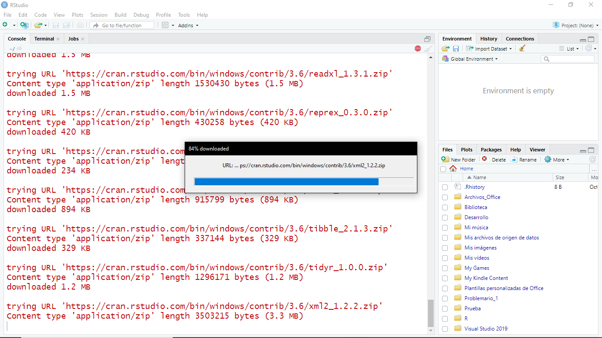
e instale. Lo sabremos porque tendremos una pantalla muy similar a la siguiente:
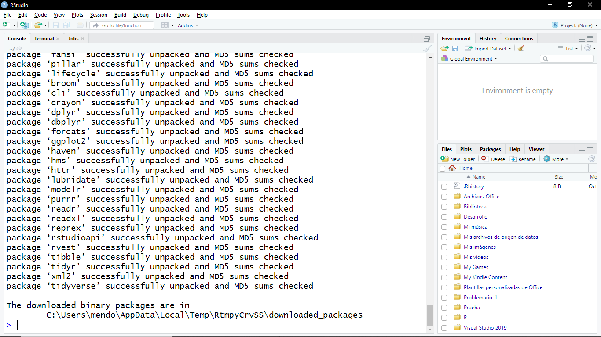
Sin embargo, es necesario cargar los paquetes que hemos instalado. Para ello se utiliza el comando library(Nombre_del_paquete). Aunque los paquetes deban instalarse una sola vez, siempre deben ser cargados al iniciar sesión. Escribimos pues:
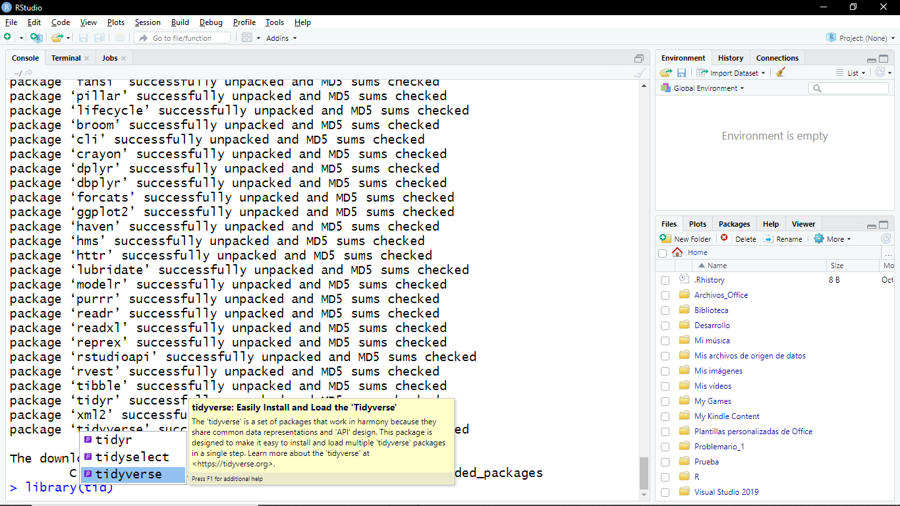
Y al ejecutarlo dando Enter obtendremos la siguiente información en pantalla, mostrando los paquetes instalados y cargados:
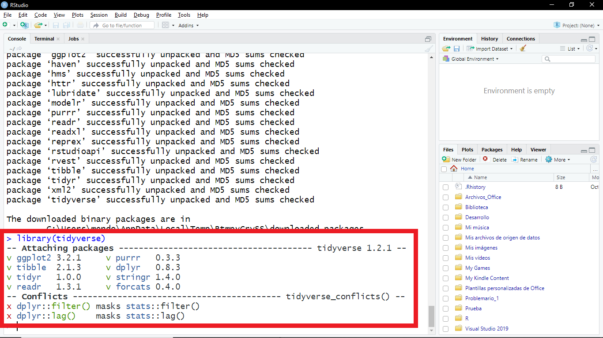
Conjuntos de datos de ejemplo o datasets
Muchos de los conjuntos de datos analizados en estas páginas pertenecen al siguiente paquete instalable desde internet: datos. Es muy recomendable instalarlo, junto con otras dependencias. Primero instalemos datos:
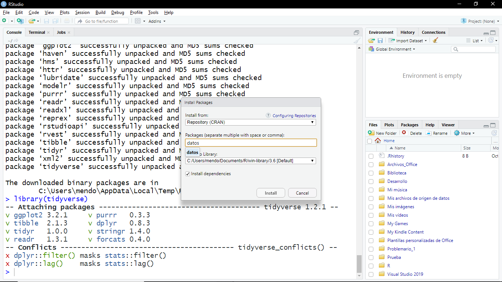
Enseguida instalamos las dependencias del paquete. Pero como serán varios que debemos instalar, escojamos otro método para hacerlo, más rápido en cuanto a su captura. En el panel de la consola escribiremos lo siguiente:
install.packages(c("nycflights13", "gapminder", "Lahman", "nasaweather", "babynames", "fueleconomy"))Esperemos que finalice la descarga y ya tenemos listas nuestras herramientas de trabajo.